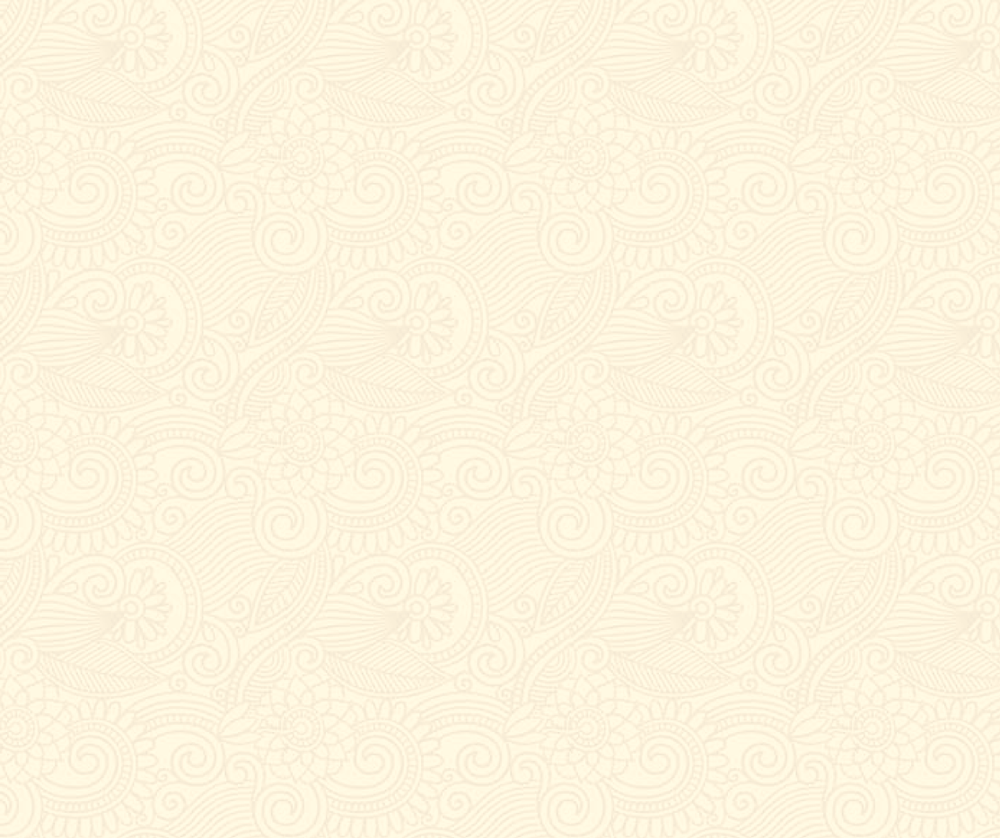
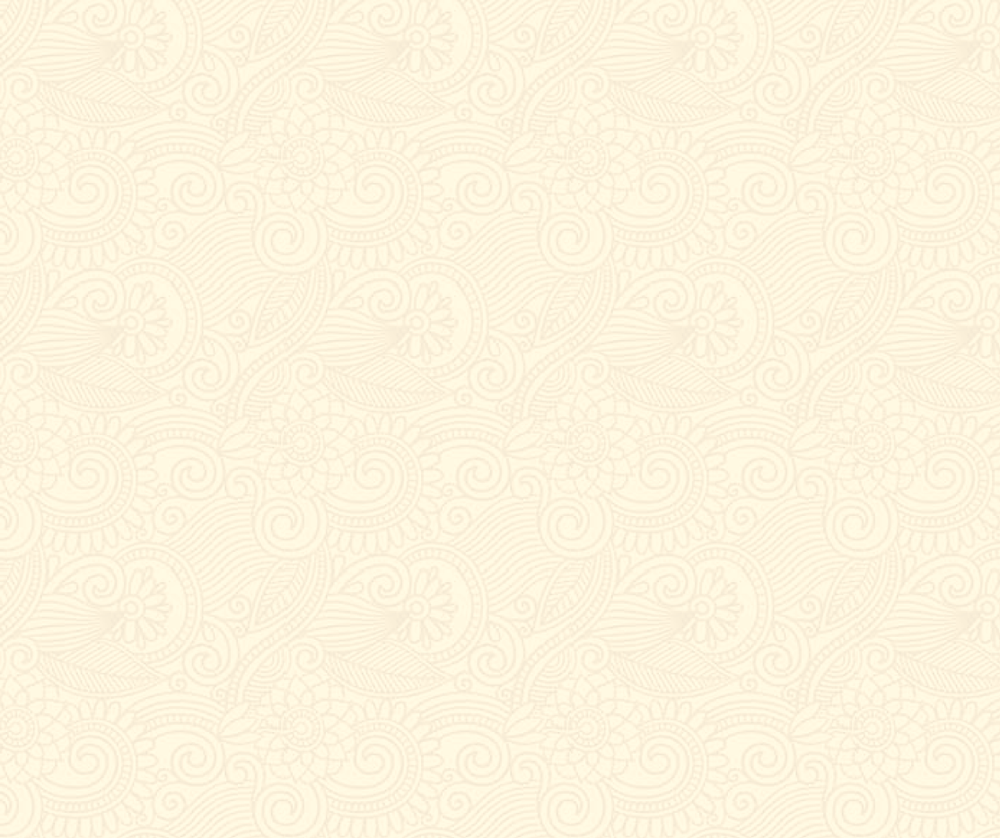

ABOUT
デザインするのが好きな高校一年生
WebDesignコースに通っている高校1年生です。学校の文化祭や部活動でポスターを作成したことをきっかけにデザインするのにハマりました！


吹奏楽部
吹奏楽部に中1のころから所属しています！
演奏している楽器はトランペットです。
一番好きな演奏曲はルパンのテーマ曲です。
My Website
私のウェブサイト
WebDesignコースに通っている高校1年生です。学校の文化祭や部活動でポスターを作成したことをきっかけにデザインするのにハマりました！
吹奏楽部に中1のころから所属しています！
演奏している楽器はトランペットです。
一番好きな演奏曲はルパンのテーマ曲です。
私たちの吹奏楽部は週4回、
普段はコンクールに向けた練習を行なっています。
今は学園祭に向けて、流行りの曲を練習中です。
大変なことも多いですが、とても楽しいです！
 


誕生日にカメラをもらったことをきっかけにしカメラにハマっています！たくさん写真をこれからも撮り続けたいです。

犬を2年前から飼い始めています。すごく人懐こい犬でとても大好きです。

最近は友人に進められてYoutubeをよく見るようになりました。見すぎて勉強しなくならないように気をつけないといけないです。

「Life is Tech!（ライフイズテック）」のWebサイトを作成しました。こだわったところは色の使い方です。

Webデザインコースがどんなコースかわかるような映像を作成しました。
どんなことができるか伝わると嬉しいです。
中学2年生の頃に文化祭のポスターを作ったことをきっかけに
パソコンを作ったものづくりにハマりました！
これからもものづくりを続けていきたいです。
よかったらTwitterやFacebookで繋がってください！